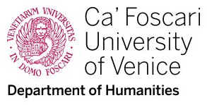

About
What this isChe cos'è
The research website and dataset of the EADH 2026 paper Modelling Early Modern Reasoning for the Venetian Risposte: A Scalable Framework. It records the Risposte of the Cinque Savi alla Mercanzia (ASVe, reg. 142, 1607-1610) as documentary units described in structured form: a stable data model, populated from Isabella Cecchini's diplomatic transcription (April 2026), updated in September 2026, and tested against an automated text recognition workflow.Il sito di ricerca e il dataset del contributo EADH 2026 Modelling Early Modern Reasoning for the Venetian Risposte: A Scalable Framework. Registra le Risposte dei Cinque Savi alla Mercanzia (ASVe, reg. 142, 1607-1610) come unità documentarie descritte in forma strutturata: un modello dati stabile, popolato dalla trascrizione diplomatica di Isabella Cecchini (aprile 2026), aggiornato nel settembre 2026 e messo alla prova con un flusso di riconoscimento automatico del testo.
What we modelChe cosa modelliamo
The single signed Risposta is the primary decision unit. A minimal documentary layer captures source-near features; an analytical layer adds controlled vocabularies, whose values are proposed by the analyst and recorded with an explicit uncertainty state and review status. Recurring institutional situations (dissent, continuations) are encoded as explicit relations.La singola Risposta firmata è l'unità primaria di decisione. Un livello documentario minimo registra i tratti aderenti alla fonte; un livello analitico aggiunge vocabolari controllati, i cui valori sono proposti dall'analista e registrati con uno stato d'incertezza e di revisione esplicito. Le situazioni istituzionali ricorrenti (dissensi, continuazioni) sono codificate come relazioni esplicite.
Sources and interpretationFonti e interpretazione
The manual transcriptions, editorial regests and automated handwriting recognition are separate text layers. The qualified model adds multiple nuclei, attributed voices and conditions within each documentary unit. Rule-based extraction is a separate, reproducible process. The Method page states how the texts and the qualified model were produced and revised, and the limits of both.Le trascrizioni manuali, i regesti editoriali e il riconoscimento automatico della scrittura sono livelli testuali distinti. Il modello qualificato aggiunge nuclei multipli, voci attribuite e condizioni all’interno di ciascuna unità documentaria. L’estrazione a regole è un processo distinto e riproducibile. La pagina Metodo dice come i testi e il modello qualificato sono stati prodotti e riletti, e i limiti di entrambi.
MeasurementsMisure
The paper’s provisional HTR CER of about 15% concerns a twenty-page experiment (18 training, 2 held out). The archived unit-level report gives 9.8% CER and 28.2% WER as micro-aggregates on 27 units under local alignment and text normalisation. Definitions and sources.Il CER HTR provvisorio di circa il 15% del paper riguarda un esperimento su venti pagine (18 per addestramento, 2 riservate alla verifica). Il rapporto conservato sulle unità riporta CER 9,8% e WER 28,2% microaggregati su 27 unità, con allineamento locale e normalizzazione. Definizioni e fonti.
Credits (CRediT contributor roles)Crediti (CRediT contributor roles)
Emmanuela Carbé - conceptualization; methodology; data curation; software (this platform); writing - original draft, review & editing. Isabella Cecchini - investigation; resources (diplomatic transcription; digitisation of the register); validation; writing - original draft. Federico Boschetti - methodology (HTR workflow); software; writing - original draft. Partner institutions: Università Ca’ Foscari Venezia / VeDPH; CNR-ILC (CLARIN Knowledge Centre, Venezia); CNR-ISEM, Venezia.Emmanuela Carbé - conceptualization; methodology; data curation; software (questa piattaforma); writing - original draft, review & editing. Isabella Cecchini - investigation; resources (trascrizione diplomatica; digitalizzazione del registro); validation; writing - original draft. Federico Boschetti - methodology (flusso HTR); software; writing - original draft. Istituzioni partner: Università Ca’ Foscari Venezia / VeDPH; CNR-ILC (CLARIN Knowledge Centre, Venezia); CNR-ISEM, Venezia.
Institutional noteNota istituzionale

This is not an institutional website of Ca' Foscari University of Venice. It was designed and developed as part of a research project of the Venice Centre for Digital and Public Humanities (VeDPH), Department of Humanities, outside the web services of the University. Responsibility for its content lies with the Centre and with the curators of the project.Questo non è un sito istituzionale dell'Università Ca' Foscari Venezia. È stato progettato e realizzato nell'ambito di un progetto di ricerca del Venice Centre for Digital and Public Humanities (VeDPH), Dipartimento di Studi Umanistici, al di fuori dei servizi web di Ateneo. La responsabilità dei contenuti è del Centro e delle curatrici del progetto.
RightsDiritti
Code MIT; dataset and generated pages CC BY 4.0; full manuscript reproductions not published; small word-level clippings of the manuscript hand (register 142) reproduced by permission of the Archivio di Stato di Venezia; institutional logos remain the property of their owners. Details: RIGHTS.md.Codice MIT; dataset e pagine generate CC BY 4.0; riproduzioni integrali del manoscritto non pubblicate; piccoli ritagli a livello di parola della mano del registro 142 riprodotti su autorizzazione dell’Archivio di Stato di Venezia; i loghi istituzionali restano proprietà dei rispettivi titolari. Dettagli: RIGHTS.md.
PrivacyPrivacy
This site does not use cookies and has no analytics or tracking. The browser stores one technical value in localStorage (r142-lang, the interface language) and, through a service worker, a local cache of the pages for offline consultation; both can be cleared from the browser at any time. Fonts and libraries are self-hosted. The map on the Names & places page is drawn from local data; the site makes no external calls. The site collects no personal data.Il sito non utilizza cookie e non ha sistemi di analytics o di tracciamento. Il browser conserva un solo valore tecnico in localStorage (r142-lang, la lingua dell'interfaccia) e, tramite un service worker, una copia locale delle pagine per la consultazione offline; entrambi si possono cancellare dal browser in qualsiasi momento. Caratteri e librerie sono ospitati localmente. La mappa nella pagina Nomi e luoghi è disegnata da dati locali; il sito non effettua chiamate esterne. Il sito non raccoglie dati personali.
AccessibilityAccessibilità
The site is built to meet WCAG 2.1 AA: text colour contrast above the 4.5:1 threshold, alternative text on all images, declared and switchable document language, skip link, visible focus, reduced-motion support, labelled controls and native expandable panels. A full audit with screen readers and a complete keyboard pass is planned.Il sito è costruito secondo WCAG 2.1 AA: contrasto del testo sopra la soglia 4,5:1, testo alternativo su tutte le immagini, lingua del documento dichiarata e commutabile, skip link, focus visibile, rispetto della preferenza di movimento ridotto, controlli etichettati e pannelli espandibili nativi. Una verifica manuale completa (screen reader; navigazione da tastiera su tutti i componenti interattivi) non è ancora stata svolta; gli esiti saranno pubblicati in questa pagina.
AI noteNota sull'AI
AI tools were used in drafting, developing and documenting the website and, in September 2026, as an aid in rereading the transcriptions against the digitisations of the register and in formulating the qualified model of the opinions. Every reading changed in that revision is recorded in the data with the previous reading, folio and digitisation. The English version of the editorial texts is a working translation made with Claude (Anthropic). Details: Method and METHOD-AI.md.Strumenti di AI sono stati usati nella redazione, nello sviluppo e nella documentazione del sito e, nel settembre 2026, come ausilio nella rilettura delle trascrizioni sulle digitalizzazioni del registro e nella formulazione del modello qualificato dei pareri. Ogni lettura modificata in quella revisione è registrata nei dati con la lettura precedente, la carta e la digitalizzazione. La versione inglese dei testi editoriali è una traduzione di servizio fatta con Claude (Anthropic). Dettagli: Metodo e METHOD-AI.md.
Data & downloadsDati e download
Datasets, snapshots and technical documentation are published on the Data & downloads page. For release history, dataset snapshots and data changes, see the Dataset journal.Dataset, istantanee e documentazione tecnica sono pubblicati nella pagina Dati e download. Per la storia delle release, le istantanee e le modifiche ai dati si veda il Diario del dataset.
This website adapts the static-site model previously developed for the VeDPH Venice Summer School repository (vessdph2026), reworking it for an archival-historical research dataset.Il sito adatta il modello di sito statico sviluppato per il repository della VeDPH Venice Summer School (vessdph2026), rielaborandolo per un dataset di ricerca archivistico-storica.
CiteCitazione
Carbé, Emmanuela, Federico Boschetti, and Isabella Cecchini. Modelling Early Modern Reasoning for the Venetian Risposte: A Scalable Framework. Research website and dataset. Third release, 16 September 2026. https://vedph.github.io/risposte-savi/ · https://github.com/vedph/risposte-savi (see CITATION.cff).